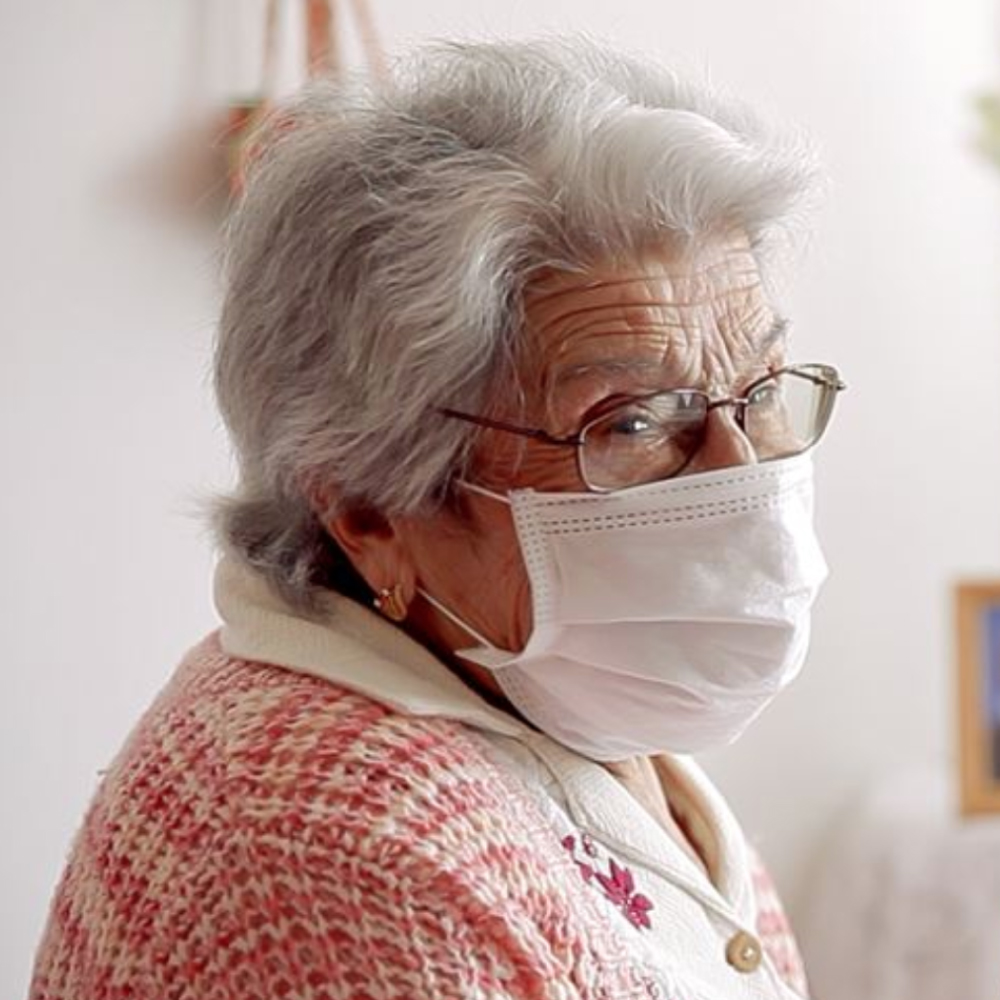

Menu
Cátia Barros
PT
Sobre mim
CV
Portfólio
Contactos
Segue-me
Jornalista.
Cátia Barros
Inicio
Samuel Úria: “Sinto-me mais um artífice do que um artista”
Jornalismo
Saiba que escolas têm registo de casos de Covid-19
Jornalismo / Visualização de Dados
Economia (não) mexe com ruas vazias
Jornalismo / Desenvolvimento Web
Media. O outro lado da moeda
Jornalismo / Editorial
Brexit. Um processo sem fim
Jornalismo
Como geria um restaurante em pandemia?
Jornalismo / Interativo
Perfil: Sílvia Lima
Jornalismo / Vídeo
Braga deixou o Pimba entrar [fotogaleria]
Fotografia

Das 25 mortes às visitas “por entre os vidros”. Como o lar da Santa Casa de Aveiro viveu o surto de Covid-19
Jornalismo / Vídeo
“Desmotivação” e “pressão social”: o que leva os estudantes a desistir do Ensino Superior
Jornalismo